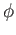
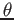
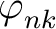

You can plot any quantity on Fermi surfaces as a color plot
by using fermisurfer program1.
fermi_velocity.x and fermi_proj.x are used
to generate an input file for fermisurfer from the output
of pw.xor projwfc.x.
fermi_velocity.x generates a color-plot of Fermi velocity.
You use it as follows:
K_POINT automatic.
$ fermi_velocity.x -in {pw.x input file}
vfermi.frmsf is generated
fermi_proj.x generates a color plot of an orbital character.
You use it as follows:
K_POINT automatic.
projwfc.x just to generate {prefix}.save/atomic_proj.*.
$ fermi_proj.x -in {input file}
Input-file format is as follows:
&PROJWFC
{The same as the input of projwfc.x}
/
{Number of target wavefunctions}
{Index of target WFC1} {Index of target WFC2} {Index of target WFC3} ...
It generates
|〈|〉|2,
where ns and
target(i) are
the number of the target wavefunctions
and the indices of target wavefunctions, respectively.
"proj.frmsf",
which can be read by FermiSurfer program.
There is an example of fermi_velocity.x and fermi_proj.x
in fermisurf_example/.